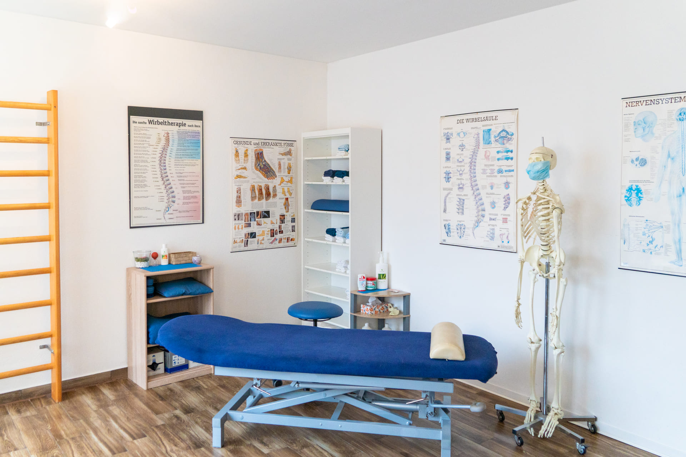

Behandlungsraum
Ein einzelner, geschlossener Raum für Befund, manuelle Therapie und Übungskontrolle — ohne Sichtkontakt zu anderen Behandlungen.
- Einzelbelegung
- 45–60 Min. am Stück
AK Physiotherapie ist bewusst klein gehalten: eine Behandlung zur Zeit, ein Therapeut pro Patient, volle Termine statt gefüllter Warteräume.

Die Rechnung einer Kassenpraxis geht für niemanden auf. Eine Verordnung über sechs Einheiten, pro Einheit zwanzig Minuten, dazwischen der nächste Termin — was bleibt, ist Zeit für die Symptomstelle, aber keine für die Ursache. Für Menschen, deren Körper beruflich oder sportlich unter Last steht, ist das die falsche Reihenfolge.
AK Physiotherapie arbeitet deshalb auf privatärztliche Verordnung oder als Selbstzahler. Nicht, weil das exklusiver klingt, sondern weil es die einzige Konstruktion ist, in der ein Termin 45 bis 60 Minuten dauern darf: Befund, Behandlung, Übungskontrolle und die Frage, was seit dem letzten Mal passiert ist — in einer Sitzung, bei derselben Person.
Das hat Konsequenzen, die wir offen benennen. Die Behandlung wird direkt abgerechnet, mit 19 % Mehrwertsteuer auf die Leistungen. Es gibt keine Wartelisten, aber auch keine Kassenerstattung im Regelfall. Wer das abwägt, wägt richtig — und findet in der Regel schnell heraus, ob unser Modell zu seiner Situation passt.
Vier Grundsätze, an denen sich jede Behandlung messen lassen muss — und die erklären, warum manche Dinge hier länger dauern als woanders.
Die Behandlungsverfahren sind belegt; die personenbezogenen Nachweise ergänzt die Praxis vor Veröffentlichung.
Gelenk- und Weichteiltechniken zur Wiederherstellung von Beweglichkeit und Gleitfähigkeit.
Belastungsspezifische Betreuung von Wettkampf- und Freizeitsportlern, inklusive Rückkehr zur Belastung.
Dosierter Belastungsaufbau als aktiver Teil der Behandlung, nicht als Anhang.
Begleitende Beratung, wo Regeneration und Versorgung zusammenhängen.
Kein geteilter Behandlungsraum, keine parallel laufende zweite Liege. Wer hier einen Termin hat, hat den Raum.
Ein einzelner, geschlossener Raum für Befund, manuelle Therapie und Übungskontrolle — ohne Sichtkontakt zu anderen Behandlungen.
Nahinfrarot- und Kompressionstherapie stehen direkt in der Praxis zur Verfügung und lassen sich an eine Behandlung anschließen.
Seckbacher Landstraße 74 in Frankfurt-Bornheim — gut erreichbar für Termine vor oder nach dem Arbeitstag.
Das klärt ein Erstgespräch schneller als jede Seite. Rufen Sie an oder schicken Sie eine Anfrage.